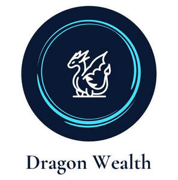

Trade Mark Journal No.2025/042 17 October 2025
UK00004272292 1 October 2025 (36)

- Class 36
- Wealth management; Wealth management services; Financial services relating to wealth management; Financial asset management; Management of assets; Financial management; Management (Financial -); Management of financial assets; Asset management; Investment management; Financial portfolio management; Management of investments; Investment asset management; Provision of financial information for professionals in the field of portfolio management, for portfolio management; Estate management; Asset management services; Property management; Management of property; Management of corporate finances; Financial management of pensions; Financial trust management; Financial fund management; Financial management of funds; Property asset management services; Financial planning and management; Financial management and planning; Portfolio management; Asset and portfolio management; Capital management; Financial management relating to investment; Financial investment management services; Property portfolio management; Financial management of collective investment schemes; Financial management services; Investment management services; Funds management; Management of funds; Financial management of stocks; Risk management consultancy [financial]; Investment trust management; Financial risk management; Risk management [financial]; Corporate funds management; Management of investment portfolio; Portfolio investment management; Management of investment portfolios; Fund management; Pension investment management; Financial management for businesses; Financial risk management services; Property management services; Investment portfolio management services; Portfolio management services (Investment -); Management of investment funds; Investment management of funds; Advisory services relating to financial asset management; Financial management relating to banking; Financial management of companies; Financial management of share accounts; Investment fund management; Fund investment management; Debt management services; Financial advisory services relating to assets management; Stock investment management; Financial management of membership schemes; Financial consultancy in the field of risk management; Share portfolio management; Financial information management and analysis services; Pension fund financial management; Advisory services relating to money management; Financial management of cash accounts; Pension management services; Financial advisory and management services; Financial management advisory services; Funds management services; Management of shares; Management of capital investment funds; Advisory services relating to [financial] risk management; Offshore fund management; Capital investment fund management.
Dragon Wealth LTD